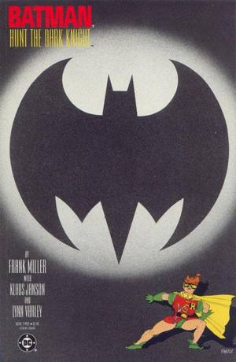

Interior pageNo image on file
Interior page
Batman: The Dark Knight #3 Superman Story Page 35 Production Color
$17,500
- Artist
- Lynn Varley (Frank Miller printed lines)
- Publisher
- DC, 1986
- Sold
- Sep 27, 2026
- Auction house
- Heritage Auctions · Comic Art Signature Auction #7470, lot 95130 (Sept 25–27, 2026)

Appeared in · issue cover shown, not this interior pageBatman: The Dark Knight (1986 series) #3August 1986View issue on Grand Comics Database →